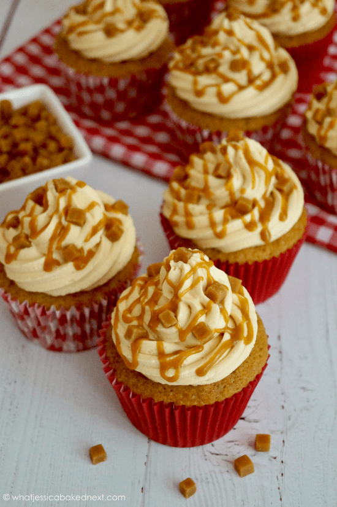

CUPCAKES

Ingredients
- 150 g unsalted butter
- 150 g dark brown sugar
- 150 g self raising flour
- 3 medium egg
- 150 g unsalted butter
- 300 g icing suga
- 75 g butterscotch sauce
Instructions
- Beat together your butter and dark brown sugar until light and fluffy
- Add in the self raising flour, and eggs and beat until smooth.
- Split between the cupcake cases using a 5cm ice cream scoop, and bake in the oven for 17-20 minutes!
- Leave to cool fully once baked!
- Make sure your unsalted butter (not stork) is at room temperature, and beat for a minute to loosen and make smooth!
- Add in the icing sugar in halves, and beat each time until combined.
- Add in the butterscotch sauce and combine until beautifully delicious